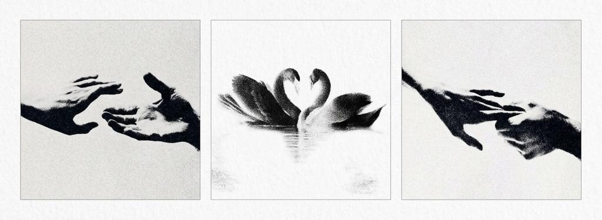

персональные журналы и книги о людях и о связи
подарок близкому человеку,
который трогает,
а не просто удивляет
который трогает,
а не просто удивляет
1
15 вопросов,
15 вопросов,
чтобы узнать близкого по-настоящему
настоящая близость начинается там, где ты по-настоящему видишь другого
путь и характер
- с чего начался его путь — какие люди и события сделали его тем, кто он есть?
- каким он был в детстве? что из того ребёнка осталось в нём сейчас?
- какой самый трудный период он прошёл — и как из него вышел?
- за что его особенно ценят те, кто его знает?
- какие три качества больше всего его описывают?
- что он любит по-настоящему? а с чем никогда не станет мириться?
- какая у него привычка или странность, за которую его любят?
как ты его чувствуешь?
- когда ты видел его по-настоящему сильным?
- что он даёт людям — что они чувствуют рядом с ним?
- какой ваш общий момент ты будешь помнить всегда?
- что вы прошли вместе, о чём мало кто знает?
- что ты понял о нём не сразу, а со временем?
чувства и будущее
- что ты никогда не говорил ему вслух, но хотел бы?
- каким ты видишь его через пять лет? чего ему желаешь?
- если бы у тебя была возможность сказать ему только одну фразу — какую?
{kind=link}
2
конструктор разворота
впиши пару слов о человеке — и увидишь, как будет выглядеть страница о нём
чем подробнее ответишь — тем объёмнее и глубже получится страница.
ничего не сохраняется, это эскиз для тебя.
ничего не сохраняется, это эскиз для тебя.
о ком речь
имя в деталях
здесь вживую соберётся эскиз страницы — начни заполнять поля выше.
это всего одна страница — и уже трогает. представь целую книгу о нём.
хочешь такую книгу
для своего человека?
мы соберём её из слов тех, кто его любит,
и свёрстаем как настоящее издание.